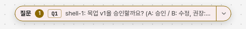
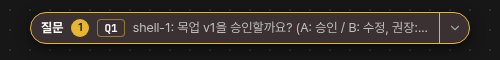

질문3Q12shell-1 · 질문다음 질문 2개
목업 v2를 승인할까요? 승인하면 main을 병합한 뒤 바로 구현합니다. 수정이 필요하면 고칠 곳을 적어 주세요 (A: 승인 / B: 수정, 권장: A)
사람 지시: 「승인하되, 질문 알약 배경색을 loom 테마와 톤을 맞출 것 이에대한 목업 작성」. loom 테마의 바탕·카드·창은 무채색이다. 지금 알약만 바탕에 질문 색이 10% 섞여 노랗게 뜬다(①). 이어서 사람 지시: 「그리고 알약 펼치지 않은 상태에서는 오래된 순으로 질문 하나씩 보여줘서 펼치지 않고 바로 답변 가능하게 해줘」(②). 점선이 바뀌는 곳이다.


--surface)이다. 마우스를 올린 바탕도 다른 버튼과 같은 회색(--surface-hover)이다.| 정할 것 | 권장 | 다른 안 |
|---|---|---|
| 알약 바탕 | 무채색 바탕(카드·창과 같다) | 질문 색을 지금(10%)보다 옅게 4%만 섞는다 |
| 펼치지 않은 알약의 질문 | 가장 오래된 질문 하나와 답 칸, 답하면 다음 질문 | 가장 최근 질문 하나 |
| 그래프를 가리는 높이 | 질문 전문을 다 보인다(긴 질문은 4줄까지, 넘으면 [더 보기]) | 한 줄로 줄이고 누르면 전문 |
| 번호 칩(Q1) 바탕 | 지금처럼 질문 색을 옅게 섞는다(질문 목록의 칩과 같다) | 칩도 무채색 바탕 |